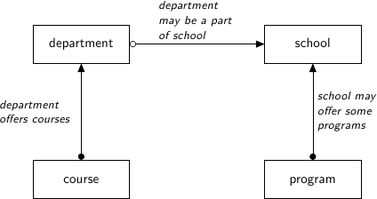

Querying¶
For this we’re going to be using the same examples as can be found here. That is we have a database for a university, with four tables:
Schools - a university may have several schools, for example the school of science, the school of arts, and the school of business. The school table has the following columns:
- A code (primary key)
- A name
- A campus - north campus, south campus, etc.
Programs - each school may offer several programs, or degrees - a bachelor of commerse, a bachelor of arts, or a master of arts. The program title has the following columns:
- A code (primary key)
- A school code (foreign key)
- A title (e.g. bachelor of commerce)
- A degree type - bachelor’s, masters, phd, etc.
Departments - for example, the physics department might be a part of the school of science. Each department has:
- A code (primary key)
- A name
- A school code (foreign key)
Courses - Departments offer courses, this is pretty self explanatory. each course has
- A course code (primary key)
- A department code (foreign key)
- A number of credits
- A description
- A title
This is summarized in the following diagram:
The Query Object¶
Tables are set up in the “Examples” folder of the github repo located at https://github.com/xnmp/lambdaquery. The boilerplate code should be fairly self-explanatory and it’s worth glancing over it to see the syntax.
Use the Query.sql method to display the SQL of a query.
ex1 = School.query()
print(ex1.sql())
This will give the result:
SELECT DISTINCT
sc_kda8.school_code AS code,
sc_kda8.name AS name,
sc_kda8.campus AS campus
FROM school AS sc_kda8
Filtering¶
Use the .filter method to filter:
School.query().filter(lambda x: x.campus == 'south')
Since this construction is so common, this can be abbreviated down to:
School.query(lambda x: x.campus == 'south')
The resulting SQL looks like:
SELECT DISTINCT
sc_pob4.school_code AS code,
sc_pob4.name AS name,
sc_pob4.campus AS campus
FROM school AS sc_pob4
WHERE (sc_pob4.campus = 'south')
Selecting¶
To demonstrate selecting, we use the fmap method of the query object. Again, we can think of a query like a list, and the fmap method is like mapping a function over that list. Selection looks like:
School.query().fmap(lambda x: x.name % x.campus)
Here we can think of the query as a list of dictionaries where the entries of the dictionary can be accessed by using an attribute name. The % operator herre can be thought of the operator that combinbes two dictionaries.
Note that because this is so common, a simpler way to do this is via the getitem method as follows:
School.query()['name','campus']
This will give the result:
SELECT DISTINCT
sc_pob4.name AS name,
sc_pob4.campus AS campus
FROM school AS sc_pob4
Now there’s always several ways to do things in LambdaQuery, and its strength lies in using a generator function to “unroll” a query. We can do this via the yield keyword, so that when we write sc0 = yield School.query() this can be thought of as for sc0 in School.query():. Then sc0 is a single school, and we can apply functions that work on single schools to sc0, such as, say, the number of departments it has.
For reference, the above is written using the generator function as:
@do(Query)
def ex4():
sc0 = yield School.query()
returnM (sc0.name, sc0.campus)
which may be read as “for each school, return its name and campus”.
Joining¶
Joining is very simple when we only have one foreign key. For example, if we have a school sc0 and we want its departments, then this is simply sc0.departments() which is itself a query object. Note the open-and-close bracket at the end - this is to signify a one-to-many relationship. For a one-to-one relationship such as the school of a department dept0, we don’t need the brackets and this is just dept0.school.
For example, suppose we wanted:
for each department, return its name, the name of its school, and the campus of its school.
This is written as:
@do(Query)
def ex6():
dept0 = yield Department.query()
returnM (
dept0.name,
dept0.school.name,
dept0.school.campus
)
And the SQL generated is:
SELECT DISTINCT
dept_ilso.name AS name,
sc_im20.name AS name0,
sc_im20.campus AS campus
FROM department AS dept_ilso
JOIN school AS sc_im20 ON (sc_im20.school_code = dept_ilso.school_code)
Aggregation¶
Now the query object has the min, max, avg, sum, and count methods, which collapse a query down into one number. So suppose for each school, we want the number of departments. This is written as:
@do(Query)
def ex5():
sc0 = yield School.query()
returnM (
sc0.name,
sc0.departments().count()
)
The generated SQL is:
SELECT
sc_xzqo.name AS name,
COUNT(DISTINCT dept_y04o.dept_code) AS count_code
FROM school AS sc_xzqo
JOIN department AS dept_y04o ON (dept_y04o.school_code = sc_xzqo.school_code)
GROUP BY 1
Encapsulation¶
Here we get our first glimpse into the enormous amount of composability offered by LambdaQuery. We can write the above a function as follows:
def num_dept(self):
return self.departments().count()
And now the above can be written as:
@do(Query)
def ex5():
sc0 = yield School.query()
returnM (
sc0.name,
num_dept(sc0)
)
If we want to use it as if it were an attribute, then we need to use the @injective decorator:
@injective()
def num_dept(self):
return self.departments().count()
This enables us to write:
@do(Query)
def ex5():
sc0 = yield School.query()
returnM (
sc0.name,
sc0.num_dept
)
In fact, as before we can now write School.query()['name','num_dept'] to get the same result.
We can even filter on this: School.query(lambda x: x.num_dept > 3) returns the SQL:
SELECT
sc_7488.school_code AS code,
sc_7488.name AS name,
sc_7488.campus AS campus
FROM school AS sc_7488
JOIN department AS dept_751s ON (dept_751s.school_code = sc_7488.school_code)
GROUP BY 1, 2, 3
HAVING (COUNT(DISTINCT dept_751s.dept_code) > 3)
In every respect the num_dept property that we have just defined may be treated as if it were just another column.
Explicit Grouping By¶
Grouping by is a matter of using the functions max_, min_, count_ (with an underscore). Note that these functions take a single row to a single row, and are the only cases of breaking the intuition of thinking of queries as lists. Such functions should only be used inside the returnM.
Suppose we wanted to get the average number of credits of courses with a code that begins with “100”. This looks like:
@do(Query)
def ex8():
cs0 = yield Course.query()
returnM (
cs0.no.like_('100%'),
cs0.credits.avg_()
)
Generated SQL:
SELECT
course_ie1k.course_code LIKE '100%' AS like_no,
AVG(COALESCE(course_ie1k.credits, 0)) AS avg_credits
FROM course AS course_ie1k
GROUP BY 1
Left Joining¶
This is a matter of using the lj method. Intuitively, this turns an empty list into a list containing a single null value, and keeps every other list the same.
For example, suppose we want
for each department, its name, and the number of courses with greater than 2 credits.
Note that it may be that a department offers no courses with greater than 2 credits, so this is a case where we need to left join. Namely:
@do(Query)
def ex15():
dept0 = yield Department.query()
returnM (
dept0.name,
dept0.courses(lambda x: x.credits > 2).lj().count().coalesce_(0)
)
Generated SQL:
SELECT
dept_18gw.name AS name,
COALESCE(COUNT(DISTINCT course_l_rwa0.course_code), 0) AS coalesce_count_no
FROM department AS dept_18gw
LEFT JOIN course AS course_l_rwa0 ON (course_l_rwa0.credits > 2)
AND (course_l_rwa0.dept_code = dept_18gw.dept_code)
GROUP BY 1
Left Joining Dependent Tables¶
One annoying thing about SQL can be seen in the following example: suppose we wanted, for each school, the number of departments that had at least one course that offered a course with at least 2 credits.
We have to remember that the course table must be left joined as well, and any reference to the department table must come with the additional provisio that the course table is not null.
LambdaQuery:
@do(Query)
def ex15():
sc0 = yield School.query()
returnM (
sc0.name,
sc0.departments(lambda x: x.courses(lambda y: y.credits > 2)
.exists())
.lj().count().coalesce_(0)
)
The generated SQL shows that all of the preceding concerns are handled for us:
SELECT
sc_bgo0.name AS name,
COALESCE(COUNT(DISTINCT CASE WHEN course_l_m7nk.course_code IS NOT NULL THEN dept_l_m5yw.dept_code END), 0) AS coalesce_count_code
FROM school AS sc_bgo0
LEFT JOIN department AS dept_l_m5yw ON (dept_l_m5yw.school_code = sc_bgo0.school_code)
LEFT JOIN course AS course_l_m7nk ON course_l_m7nk.course_code IS NOT NULL
AND (course_l_m7nk.dept_code = dept_l_m5yw.dept_code)
AND (course_l_m7nk.credits > 2)
GROUP BY 1
Pretty cool eh? This really is just the beginning. Most ORMs start getting really convoluted when you write more complex queries, and it’s usually harder than just writing raw SQL. With LambdaQuery it remains simple and intuitive, and the SQL compiler works out all the bits of SQL logic so you don’t have to.
We give just one more example here as a taste, and this is about as complex as it gets using the tables that we have. Suppose we want, for each school with a course that has at least 5 programs with a title that matches the school’s name, the average number of high credit courses offered by its departments. Here a high credit course is one with greater than 3 departments.
Here we go:
@do(Query)
def ex19():
sc0 = yield School.query(lambda x: x.programs(lambda y: y.title == x.name).count() >= 5)
returnM (
sc0.name,
sc0.departments().fmap(lambda x: x.courses(lambda y: y.credits > 3).count()).lj().avg()
)
Generated SQL:
SELECT
query_hw2g.reroute_hx8g AS name,
AVG(COALESCE(query_hw2g.count_no_hw5k, 0)) AS avg_count_no
FROM (--━━━━━━━━━━ SUBQUERY ━━━━━━━━━━--
SELECT
query_gsd4.reroute_grz4 AS reroute_hvc0,
query_gsd4.reroute_hx8g AS reroute_hx8g,
COUNT(DISTINCT course_l_hvog.course_code) AS count_no_hw5k
FROM (--━━━━━━━━━━ SUBQUERY ━━━━━━━━━━--
SELECT
sc_wuvk.school_code AS reroute_grz4,
sc_wuvk.name AS reroute_hx8g
FROM school AS sc_wuvk
JOIN program AS prog_5xfs ON (prog_5xfs.school_code = sc_wuvk.school_code)
AND (prog_5xfs.title = sc_wuvk.name)
GROUP BY 1, 2
HAVING (COUNT(DISTINCT prog_5xfs.prog_code) >= 5)
--━━━━━━━━━━━━━━━━━━━━━━━━━━━━━--
) AS query_gsd4
JOIN department AS dept_5xs8 ON (dept_5xs8.school_code = query_gsd4.reroute_grz4)
LEFT JOIN course AS course_l_hvog ON (course_l_hvog.dept_code = dept_5xs8.dept_code)
AND (course_l_hvog.credits > 3)
GROUP BY 1, 2, dept_5xs8.dept_code
--━━━━━━━━━━━━━━━━━━━━━━━━━━━━━--
) AS query_hw2g
JOIN program AS prog_copy_q6g8 ON (prog_copy_q6g8.school_code = query_hw2g.reroute_hvc0)
AND (prog_copy_q6g8.title = query_hw2g.reroute_hx8g)
GROUP BY 1
HAVING (COUNT(DISTINCT prog_copy_q6g8.prog_code) >= 5)